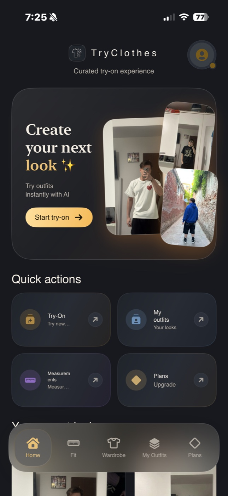
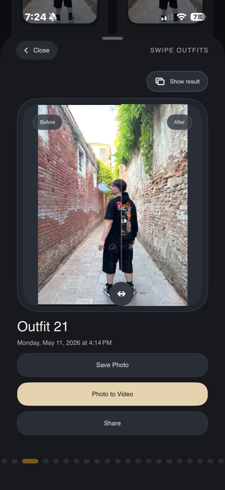
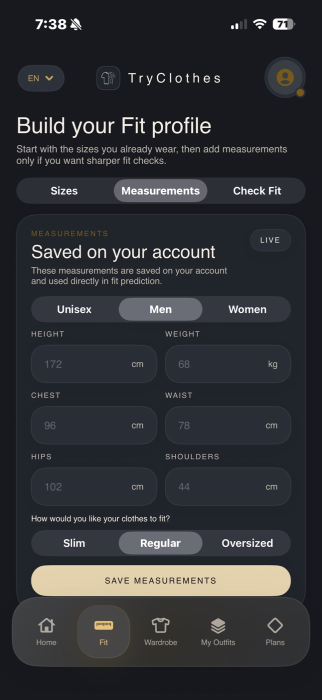

TryClothes
Probează haine online.
TryClothes este cabina ta de probă virtuală pentru haine. Vezi cum îți vin înainte să cumperi.



Virtual fitting room
Probă realistă, nu filtru.
Aplicatia analizează haine, pliuri, lumină și forma corpului.
Try-on ready
Probează înainte să cumperi.
Ținute testate virtual, pregătite pentru garderoba ta.
Probă haine virtuală
Probă realistă, nu filtru.
TryClothes păstrează textura, lumina și proporțiile ținutei, ca să poți proba haine online cu încrederea unei cabine reale.
Cum funcționează
Trei pași pentru o probă virtuală premium.
Un flux gândit pentru shopping online fără ghicit: încarci, alegi, compari și păstrezi doar hainele care arată bine pe tine.
Încarci o poză cu tine.
Alegi o imagine clară sau un look salvat, iar TryClothes pregătește corpul și lumina pentru proba virtuală.
Selectezi haina dorită.
Poți testa haine din magazine online, screenshots sau articole vestimentare salvate în garderoba ta digitală.
Compari rezultatul.
Vezi rapid outfit-ul pe corp, compari variantele și alegi doar ținutele care merită comandate.
Întrebări frecvente
Tot ce trebuie să știi despre proba virtuală de haine.
Cum pot proba haine online cu TryClothes?
Încarci o poză cu tine, alegi hainele sau clothes pe care vrei să le testezi, iar TryClothes generează o probă virtuală cu AI.
Pot proba clothes și ținute din magazine online?
Da. Poți porni de la poze sau articole vestimentare salvate, apoi le poți vedea într-un preview realist pe corpul tău.
De ce este diferit de un filtru AI?
TryClothes analizează proporții, lumină, texturi și contur. Scopul este o probă de haine credibilă, nu o suprapunere rapidă.
TryClothes este disponibil pe iPhone?
Aplicația este pregătită pentru iOS în fază beta. Înscrie-te pe lista ca să probezi haine online înainte de lansarea publică.
Private beta
Probează haine înaintea tuturor.
Locurile pentru Beta Privată sunt limitate. Intră pe lista și primești acces la TryClothes înainte de lansare.